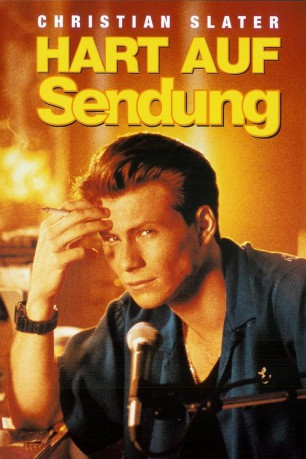

#1462 Hart auf Sendung
Alternativ: Pump Up The Volume
 
 IMDB-Wertung: 7.2 / 10
IMDB-Wertung: 7.2 / 10  Metascore: 77
Metascore: 77 
Der schüchterne Mark Hunter ist gerade mit seinen Eltern von New York in ein kleines Kaff in Arizona gezogen und hat Schwierigkeiten, neue Freunde zu finden. Seine Eltern schenken ihm einen Kurzwellensender, damit er mit seiner alten Clique in Kontakt bleiben kann, doch der Teenager hat eine bessere Idee: Ein eigener Piratensender! Unter dem Pseudonym "Happy Harry mit dem Harten" macht er seinem angestauten Frust jeden Abend nach Einbruch der Dunkelheit gehörig Luft. Um die Sendung bildet sich schon bald ein kleiner Kult, besonders unter seinen Schulkameraden hat er bald zahlreiche Fans, die jedoch nichts von seiner wahren Identität wissen. Der Schulleitung ist allerdings weniger begeistert, denn seine heftigen Scherzen gehen oft weit unter die Gürtellinie. Als sich einer von Marks Zuhörern das Leben nimmt, eskaliert die Situation...
Jahr: 1990
Dauer: 102 Minuten
FSK: 12
Land: Kanada Studio: Concorde FilmverleihTonspuren: DD5.1 - ,
Untertitel: Englisch,
Auflösung: 720p (1280x688) Größe: 5324 MB
Genre: Komödie, Drama, Musik
Regisseur: Allan Moyle
Drehbuch: Allan Moyle
Soundtrack: Cliff Martinez
Darsteller:
 Christian Slater als Mark Hunter, Hard Harry
Christian Slater als Mark Hunter, Hard Harry- Annie Ross als Loretta Creswood
 Scott Paulin als Brian Hunter
Scott Paulin als Brian Hunter Mimi Kennedy als Marla Hunter
Mimi Kennedy als Marla Hunter- Anthony Lucero als Malcolm Kaiser
- Billy Morrissette als Mazz Mazzilli
 Ellen Greene als Jan Emerson
Ellen Greene als Jan Emerson Samantha Mathis als Nora Diniro
Samantha Mathis als Nora Diniro- Jeff Chamberlain als Mr. Woodward
- Lala Sloatman als Janie
- Ahmet Zappa als Jamie
 Seth Green als Joey
Seth Green als Joey Gregg Daniel als Teacher Moore
Gregg Daniel als Teacher Moore- Jill Jaress als Mrs. Kaiser
 Clayton Landey als Shep Sheppard
Clayton Landey als Shep Sheppard- David McKnight als Detective #1
 Robert Harvey als Detective Denny
Robert Harvey als Detective Denny Matt McGrath als Chris
Matt McGrath als Chris- John K. Shull als PTA Parent #2
 Lin Shaye als PTA Parent #3
Lin Shaye als PTA Parent #3- Steph DuVall als Reporter #1
 Nigel Gibbs als Marshall
Nigel Gibbs als Marshall- David Glasser als Jack
 James Hampton als Arthur Watts
James Hampton als Arthur Watts- Juliet Landau als Joni , scenes deleted
- Ed Trotta als Gil
 Craig Braginsky als Student , uncredited
Craig Braginsky als Student , uncredited- Cathrine Grace als Parent , uncredited
- Andy Romano als Murdock
- Robert Schenkkan als David Deaver
- Cheryl Pollak als Paige Woodward
- Keith Stuart Thayer als Luis Chavez
- Holly Sampson als Cheryl Biggs
- Annie Rusoff als Annie
- Jonathan Mazer als Jonathan
- Alexander Enberg als Alex
- Robert Gavin als Doug
- Dan Eisenstein als Donald
- Mark Ballou als Eric
- Daryl Sebert als Cory
- Marc Siegler als Teacher Stern
- Ariana Mohit als Alissa
- Nolan Hemmings als Chip
- Justin Hessling als Holden Chu
- Jay Lambert als Gordon
- Allan Kolman als Postal Clerk
- Tony Auer als Police Officer
- Paulette Ballock als Police Dispatcher
- Chris Jacobs als Matt
- Virginya Keehne als Linda
Datei: X:\1990\Hart auf Sendung (1990, FSK12, 1280x688).mkv seit 07.07.2015
Festplatte: HD 1987-1991
 Es gibt insgesamt 52 Filme in der Gruppe '1990'
Es gibt insgesamt 52 Filme in der Gruppe '1990'